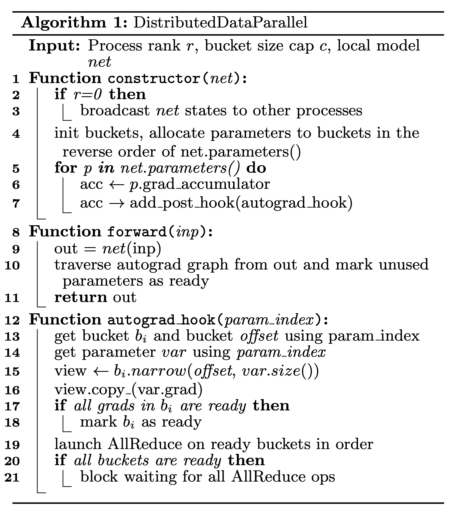
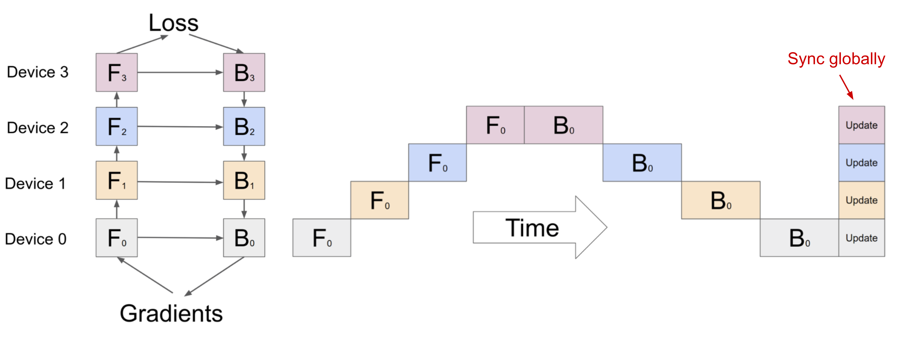
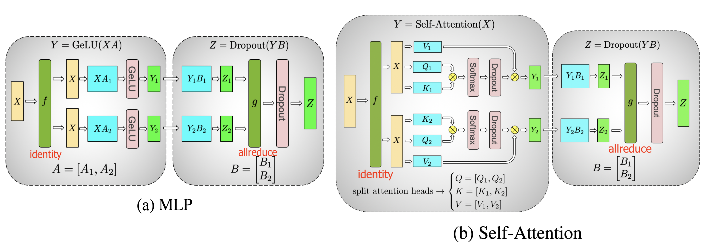
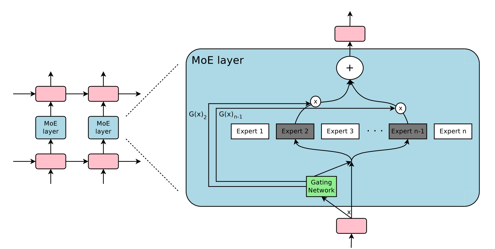
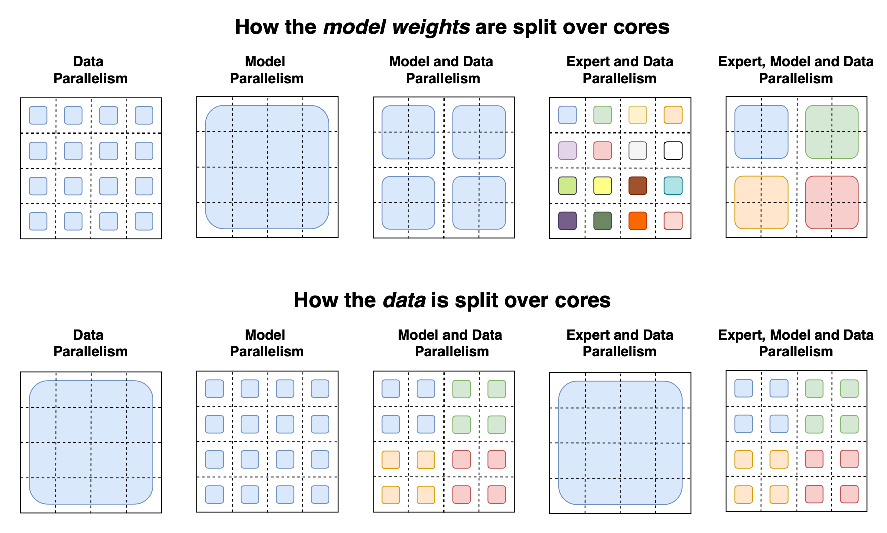
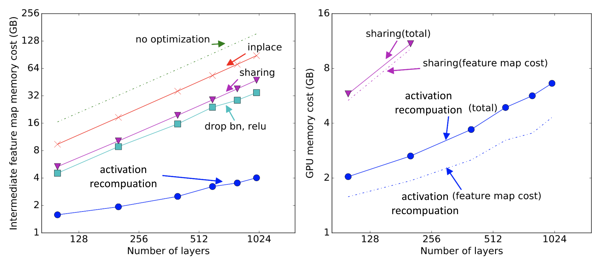

把大模型训练读成三本账：状态内存、激活内存与调度空泡
读 Lilian Weng《How to Train Really Large Models on Many GPUs?》：不是背并行术语，而是学会判断一个训练系统到底卡在显存、通信、流水线利用率，还是稀疏路由的负载均衡。
现在读这篇 2021 年的长文仍有价值，因为大模型训练的底层矛盾没有消失：参数更多、上下文更长、集群更大之后，工程师仍要回答同一个问题：到底把哪一部分切开、搬走、重算，或者只在少数专家上计算？
我的读法是：原文最有用的不是给出一个万能训练配方，而是把大规模训练拆成三本账。第一本是模型状态账，包括参数、梯度、Adam 动量和方差等优化器状态；第二本是激活账，即前向中间结果、反向重算和临时缓冲；第三本是调度账，包括 AllReduce、流水线空泡、权重版本一致性和专家负载均衡。
沿着这三本账，Data/Model/Pipeline/Tensor Parallelism、MoE、checkpointing、mixed precision、compression、ZeRO 就不再是并列名词，而是一组成本转移工具：有的减少冗余状态，有的把等待时间变成微批并行，有的用额外前向计算换显存，有的用稀疏路由把容量增长和每 token 计算解耦。
读完应该能做两件事：看到一个训练方案在省哪本账，也能说出它把成本转移到了哪本账。本文读解的中心判断
How to Train Really Large Models on Many GPUs?
系统问题：大模型训练先卡在三本账
原文开场把瓶颈说得很朴素：单个 GPU 容量有限，而大模型不仅有大量权重，还要保留梯度、优化器状态、激活和临时结果；训练语料也很大，单进程会让时间尺度不可接受。这不是“多买 GPU”就结束的问题，因为 GPU 之间交换什么、何时交换、交换后权重版本是否一致，都会影响收敛和吞吐。
| 账本 | 原文中的典型来源 | 常见处理方式 | 代价转移 |
|---|---|---|---|
| 模型状态 | 参数、梯度、Adam momentum/variance、混精训练中的 FP32 master weights | Data parallel sync、ZeRO-DP、memory-efficient optimizer | 通信复杂度增加；调度要避免冗余传输 |
| 激活与临时结果 | 前向中间激活、反向传播需要的 feature maps、碎片化缓冲 | Activation recomputation、compression、ZeRO-R、CPU offloading | 额外前向计算、编码/解码开销，或 PCIe/CPU 传输延迟 |
| 调度与通信 | AllReduce、pipeline bubbles、权重 staleness、专家负载不均 | gradient bucketing、microbatch pipeline、1F1B、auxiliary loss、expert choice | 实现复杂度与可复现性压力上升；收益受模型结构和集群拓扑影响 |
并行维度：DP、MP、PP、TP 分别切开什么
并行训练的第一层判断不是“用哪种并行”，而是问：我是把数据切开、把层切开、把时间切成微批，还是把单个张量运算横向切开？


naive-data-parallelism.png，caption 实际描述的是朴素模型并行。| 并行方式 | 切分对象 | 主要缓解 | 主要新问题 |
|---|---|---|---|
| DP | 样本/数据批；模型完整复制 | 训练时间与吞吐 | 梯度同步、权重陈旧、模型状态冗余 |
| MP | 层或参数分区 | 单卡放不下完整模型 | 顺序依赖导致空泡；跨设备激活/梯度传输 |
| PP | minibatch -> microbatches；stage 时间交错 | MP 的设备闲置 | bubble fraction、权重版本、flush/1F1B 调度 |
| TP | GEMM/attention 等张量运算 | 层内计算与参数过大 | 频繁 collective 通信；要求算子结构适配 |
流水线调度：吞吐收益来自把空泡压薄
Pipeline Parallelism 的直觉很像生产线：不同 stage 同时处理不同 microbatch。原文特别强调，microbatch 每个都要 forward 和 backward；worker 间传 forward activations 与 backward gradients，调度策略决定了是否同步、是否保留多版本权重，以及空泡能压到多小。


| 方案 | 原文描述的动作 | 它省下什么 | 它欠下什么 |
|---|---|---|---|
| GPipe | 多个 microbatch 过流水线，batch 末同步聚合梯度 | 比朴素 MP 更少设备空闲；保持同步更新 | 仍有填充/排空空泡；参数分布不均会破坏近线性吞吐 |
| PipeDream 1F1B | stage 交替 forward/backward，可有 stage replicas | 更好的流水线利用率 | 无全局 batch 末同步时会出现权重版本不一致风险 |
| Weight stashing / vertical sync | 为 microbatch 保留对应版本，或把版本信息随激活/梯度传播 | 保护 learning efficiency | 保存多版本权重会抬高内存 |
| PipeDream-flush / 2BW | 周期性 flush 或仅维护 double-buffered weights | 减少多版本权重的内存压力 | 牺牲少量吞吐或增加调度约束 |
张量并行：Transformer 层内也能横切
如果说 MP/PP 主要沿着层深度纵切，Tensor Parallelism 则在一个层内部横切矩阵乘法。原文用 Megatron-LM 的 Transformer 例子说明：MLP 和 self-attention 里的大 GEMM 可以分块计算，再在必要边界通信合并。

MoE：稀疏专家把“参数容量”和“每 token 计算”拆开
MoE 章节的张力和前面不同：不是把同一份密集计算分给更多 GPU，而是让每个 token 只经过少数专家。这样模型总参数可以很大，但每个 token 激活的计算相对稀疏。问题也随之改变：瓶颈从“能否放下”变成“路由是否均衡、专家是否被充分训练、溢出 token 如何处理”。


| 路由思路 | 原文中的机制 | 它解决什么 | 仍有哪类边界 |
|---|---|---|---|
| Token choice | GShard top-2、Switch top-1：每个 token 选择最佳一个或两个专家 | 减少每 token 计算；让容量稀疏增长 | 需要 auxiliary loss 和 capacity；热门专家满载会产生 overflow/wasted tokens |
| Expert Choice | 每个专家选择 top-k tokens；原文 2022-03-13 更新加入该段 | 天然固定每个专家容量；原文转述 Zhou et al. 2022 称训练收敛改善 2x | 需要提前看到 batch/token 集合；原文指出小 batch 与自回归生成不适合 |
| 并行策略 | MoE 层 shard，非 MoE 层可复制；结合 data/model parallelism | 提高吞吐与可训练参数规模 | 专家负载、batch size、通信拓扑会决定收益能否兑现 |
省内存策略：少存、晚存、重算、分片
原文最后一大块很实用：当 GPU memory 满了，除了继续切并行，还可以改变“哪些东西必须立刻保存在 GPU 上”。这里的所有方法都不是魔法，它们分别用 CPU 传输、额外计算、数值技巧、编码压缩或状态分片来换显存。

| 方法 | 原文依据 | 省哪本账 | 付出的成本 |
|---|---|---|---|
| CPU offloading | Rhu et al. 2016；把暂时不用的数据搬到 CPU | GPU 上的状态/中间结果 | 原文指出近年来较少流行，原因是会拖慢训练时间 |
| Activation recomputation | Chen et al. 2016；只保存分区边界激活 | 激活账 | 额外 forward pass；调度与 checkpoint 位置要设计 |
| Mixed precision | FP16 forward/backward + FP32 master weights/loss scaling/FP32 accumulation | 计算与部分存储 | 数值稳定性；部分状态仍需 FP32 |
| Compression / Gist | Jain et al. 2018；中间结果首用后编码，backprop 前解码 | 激活与 feature maps | 原文转述实验：5 个图像分类 DNN 中约 2x 内存降低，平均 1.8x，约 4% performance overhead |
| ZeRO | Rajbhandari et al. 2019；ZeRO-DP + ZeRO-R | 优化器状态、梯度、参数、残余状态 | 通信调度复杂；需要和 activation recomputation、buffer 管理等结合 |
结论审计：哪些是机制，哪些仍要看你的集群
| 判断 | 证据强度 | 原文锚点 | 使用时的 caveat |
|---|---|---|---|
| 大模型训练必须同时处理显存与训练时间 | 强：原文开场与后续所有章节共同支持 | Training Parallelism 开头 | 仍需用 profiler 判断你自己的主瓶颈 |
| m 增大可以降低 GPipe 空泡比例 | 中强：原文给出公式与 GPipe 观察 | Pipeline Parallelism 公式 | microbatch 增大也会影响 batch semantics、激活内存与通信 |
| PipeDream 1F1B 提升利用率但引入权重版本账 | 中强：原文明确说明 weight stashing/vertical sync | PipeDream 段 | 不同实现对 staleness 与内存的处理不同 |
| MoE 让参数容量与每 token 计算部分解耦 | 中强：来自 MoE/GShard/Switch 机制与引用论文 | MoE 章节 | 负载均衡、batch size、capacity、路由稳定性决定实际收益 |
| ZeRO 通过状态分片显著缓解数据并行冗余 | 中强：原文描述 ZeRO-DP/ZeRO-R 机制 | Memory Efficient Optimizer 段 | 通信 volume、拓扑和框架实现会决定端到端收益 |
| 所有技巧可以无痛叠加 | 不成立：原文提供组合线索，不提供统一最优解 | 全篇综合 | 组合会产生二阶约束，如 TP 通信与 PP 调度、MoE 路由与 DP batch size 互相影响 |